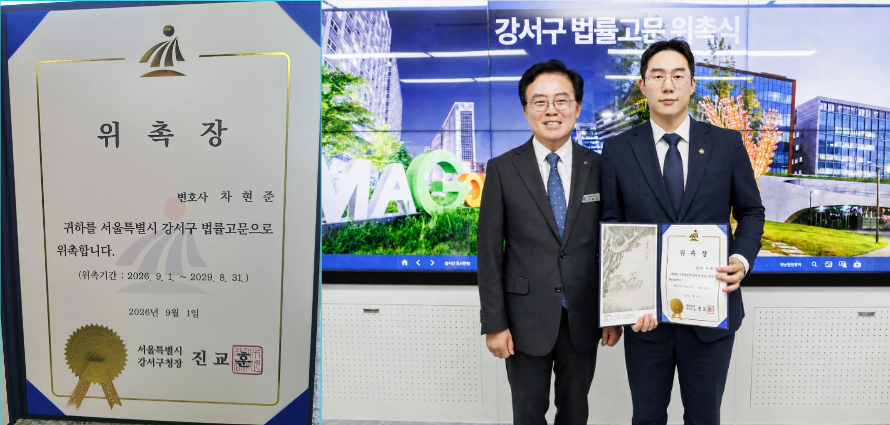
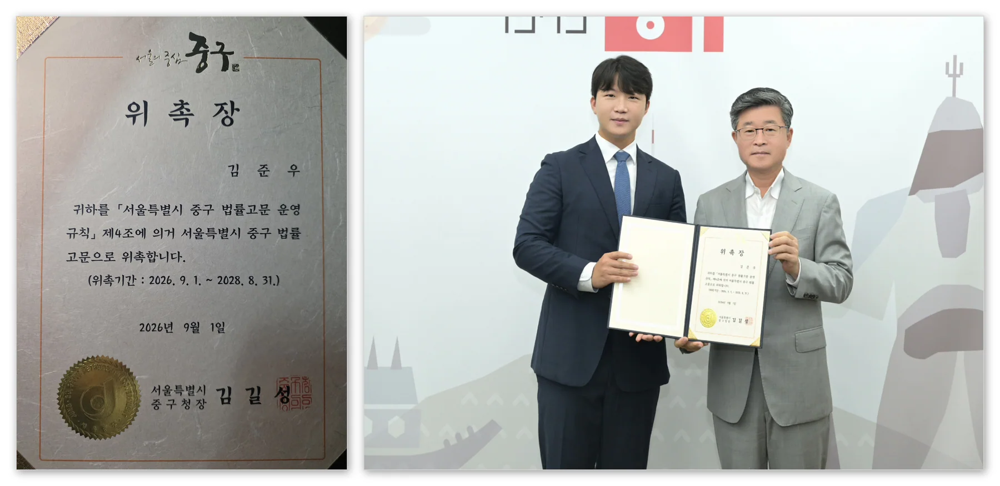
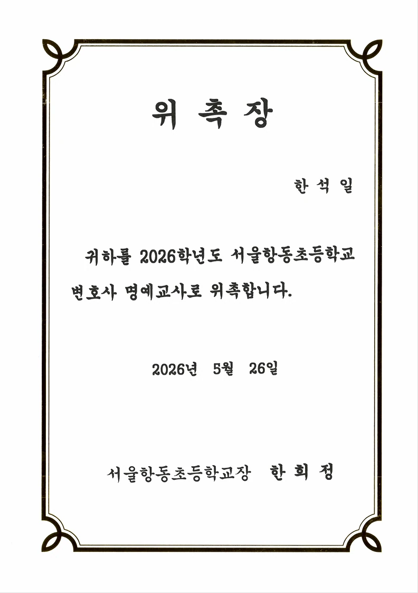
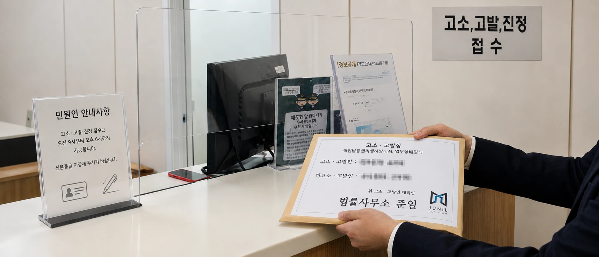

24시간 영업 · 서울 송파구 법원로96 문정법조프라자 6층 603호

차현준 대표변호사가 행정심판, 행정소송 등 분야에서 전문성을 인정받아 서울 강서구청 고문변호사로 위촉되었습니다(2026. 9. 1. - 2029. 8. 31.) 재개발, 재건축, 처분 취소 등 다수의 행정사건, 지방자치단체 소송을 위임받아 직접 수행

김준우 대표변호사가 재건축·재개발, 국가소송 등 전문성을 인정받아 서울중구청 고문변호사로 위촉되었습니다(2026.9.1. - 2028. 8. 31). 재개발, 재건축, 처분 취소 등 다수의 행정사건, 지방자치단체 소송을 위임받아 직접 수행하고, 관련

법률사무소 준일 한석일 대표 변호사는 학교폭력 사건 및 소년 범죄 사건에 대한 전문성을 인정받아 2026. 5. 26.자로 서울항동초등학교 명예교사로 위촉 되었습니다.

법률사무소 준일은 대규모 부동산 시행사를 대리하여, 개발사업과 관련한 형사 고소·고발/민사소송/국개배상청구 사건을 수행하고 있습니다. 법률사무소 준일은 대규모 부동산 시행사를 대리하여, 수백억대 개발사업 관련 관할 행정청을 상대로 형사 고소·고발 사건
다양한 분야의 전문성을 갖춘 변호사들이 모여 양질의 법률서비스 제공을 목표로 법률사무소 준일을 개소하였습니다.